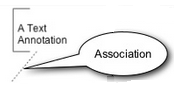
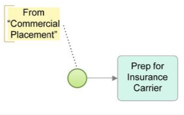
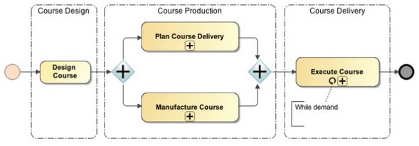

Artifacts are elements that have no associated semantics. They allow for the addition of complementary information to models in order to make them easier to understand without affecting the process diagram features. There are 3 types of artifacts in BPMN: Data Objects, Text Annotations and Groups, and the last two are available as symbols in GeneXus. Text Annotation - They allow for the addition of further descriptive information or notes about a process or its elements, with the purpose of making them more understandable. They can be connected to an element in the diagram through an association connector (represented with a dotted line), which makes it possible to add tags to elements. They can also be placed anywhere in the diagram.  
Group – A group is used to frame a part of the diagram, grouping several elements together according to certain categorization criteria. A group simply shows that the elements included in it are related and don't have any other semantics other than organizing elements. 
Go to the main article - Return to the previous section - Go to the next section
|
| Backlinks | ||
| BPD Symbols (Toolbox) | Toc:GeneXus BPM Suite | |
| Introduction to BPMN | Introduction to BPMN - Connectors | Introduction to BPMN - Swimlanes |